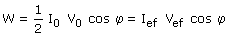

|
Potencia activa La potencia media en un ciclo que se disipa en un elemento es:  Siendo φ el desfase entre intensidad y tensión (Diferencia de sus argumentos) En una bobina o en un condensador el desfase entre intensidad y tensión es π/2 y por tanto la potencia media es cero. En es-tos elementos se pierde energía durante medio ciclo al crear el campo eléctrico o magnético y se gana energía en la otra mitad del ciclo al desaparecer el campo. En una resistencia el desfase entre intensidad y tensión es 0
y por tanto la potencia media es positiva. En la resistencia se consume
energía durante todo el ciclo |